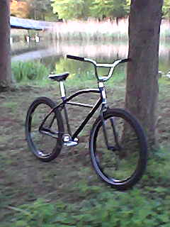
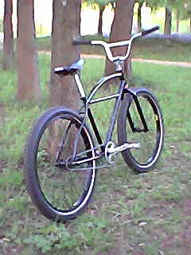
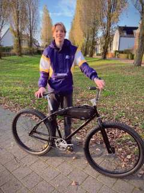
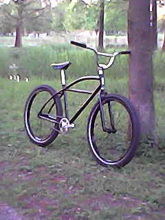
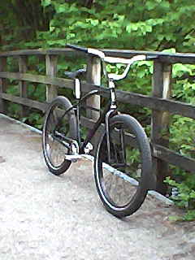

Deze website gaat over mijn Klunker fiets van State Bicycle
Ik heb mijn eerste Klunker gekocht in 2004. Na wat overleg met een medewerker van State Bicycle heb ik 20% korting ontvangen wegens de torenhoge verzendkosten. Hierdoor heb ik de fiets kunnen bemachtigen voor nog geen €500.
Na een lange reis uit Arizona was ik de eigenaar van een uiterst zeldzaam voertuig. Eén van de weinigen in Nederland, misschien destijds wel de enige!
Nieuws
Op het moment zijn Klunkers erg duur buiten de Verenigde Staten wegens de nieuwe heffingen. Volgens de eigenaar dreigt zelfs de voorraad op te raken!
Foto's
    Over de klunker
Specificaties
Trapas: afgsloten kogellagers, JIS Square Taper, English Threaded (68mm × 103mm).
Remsysteem: terugtraprem.
Ketting: KMC Singlespeed wide.
Kettingblad: stalen tandkrans, 42 tanden.
Cranks: aluminium cranks, 170mm.
Frame: Hi-Tensile staal.
Voorvork: Hi-Tensile staal, Unicrown.
Stuur: V-stuur, Hi-Tensile staal, chroom.
Balhoofd: Neco 1 1/8" Threadless, staal.
Achternaaf: remnaaf, Shimano Nexus systeem.
Stuurpen: aluminium stuurpen, 22,2mm klemdiameter.
Banden: 27,5" × 2,35" noppenbanden.
Velgen: aluminium dubbelwandige velgen, 36 gaats.
Pedalen: kunststof platform pedalen.
Zadel: kunstleer zadel, stalen zadelrails.
Zadelpen: aluminium zadelpen, 25,4mm × 300mm.
Zadelpenklem: aluminium zadelpenklem, 28,6mm diameter.
Spaken: 14 Gauge roestvrijstalen spaken.
Tandwiel achter: 22 tanden, Shimano Nexus type.
Extra opties
Klunker frametas.
Decathlon BC100 fietscomputer.
Shimano Nexus tandwiel 18 tands.